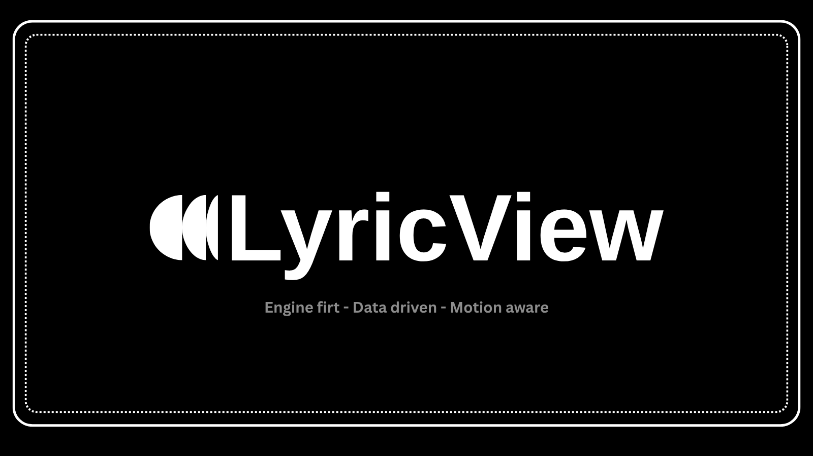

Engine first
LyricView
A reusable lyrical engine for timing, state, motion, and deterministic rendering — built to power different lyric experiences without coupling the logic to a specific UI.
Data driven
Deterministic
Extensible
Core model
Song, section, line, word, and syllable structures provide the source of truth for synchronized lyrics.
Time engine
Playback, seek, pause, and progress are computed from a single timeline model.
Motion system
Interpolation, easing, scroll control, and reduced-motion awareness keep movement smooth and predictable.
Parser registry
Plain text, LRC, JSON, and custom extensions plug into the same engine without hardcoded assumptions.
What it solves
- Synchronize lyrics by line, word, or syllable.
- Compute the active state from a timestamp.
- Drive smooth autoscroll and visual transitions.
- Keep rendering deterministic and testable.
- Register custom parsers and plugins without rewriting the core.
Core concept
Source model
The lyric hierarchy stays structured as Song → Section → Line → Word → Syllable so timing and rendering can stay predictable.
Time is truth
The engine resolves active lyrics from a single timeline instead of letting the UI calculate motion state by itself.
Renderer is dumb
Visual code consumes state and makes the line appear active, faded, or animated without owning the real logic of the song.
Extensible by design
New parsers, plugins, renderers, and motion behaviors integrate through registered adapters instead of hardcoded branches.
Project map
Core runtime
- engine orchestration
- timeline state
- event dispatch
Model layer
- song and section definitions
- line/word/syllable resolution
- progress calculations
Extensibility
- parsers registry
- plugin manager
- renderer adapters
Contributions
- test new formats
- improve motion
- add renderers and themes
Usage
from lyricview.core.engine import LyricEngine
engine = LyricEngine()
engine.seek(12.5)
state = engine.tick()
print(state["visual"]["active_line_index"])
Status: engine architecture is in place and verified by tests.
Roadmap
Phase 1
Stabilize the engine model, timer logic, and deterministic state updates for active lyrics.
Phase 2
Expand parser coverage for more lyric formats and improve validation around malformed or partial inputs.
Phase 3
Add more renderer backends and visual themes while keeping the core API stable and interface-agnostic.
Phase 4
Lean into community-driven improvements around playback UX, accessibility, and real-world integrations.
Contributing
This project is intentionally structured so contributors can improve the core engine, add new parsers, enhance the motion layer, or build different renderers without rewriting the model. If you want to contribute, the best starting points are the timing engine, parser registry, motion math, and the renderer adapter layer.
Start here
- read the engine and model layers
- run the tests before changing behavior
- keep new logic data-driven and deterministic
High-value work
- new parser adapters
- motion or scroll improvements
- accessibility and reduced-motion support
Good PRs
- clear scope
- tests for behavior
- docs updates when the API changes
FAQ
Why separate engine and UI?
Because timing and visual state should not be coupled. The engine owns the truth, and the renderer simply reflects it.
Can I add another renderer?
Yes. The renderer layer is designed to consume computed engine state instead of owning business logic.
Is this intended for OSS?
Yes. The project is built with modularity and extensionality in mind so multiple contributors can improve different layers independently.
Where should I begin?
Start with the model and the time engine, then move to parser integration or motion tuning once the core feels familiar.
Backlog
The project is intentionally open-ended. Here is the current list of ideas that would make LyricView stronger, more reusable, and more contributor-friendly.
50 things to add
- Support for LRC format
- Support for VTT lyrics
- Support for SRT with timing
- JSON structured parser
- YAML lyric schema
- Inline text timestamp parser
- Duet or multiple voices
- Word-level timestamps
- Syllable-level timestamps
- Karaoke mode
- Performance mode
- Studio mode
- Compact mode
- Cinema mode
- Live mode
- Smooth auto-scroll with damping
- Section-based scrolling
- Word and syllable interpolation
- Custom easing presets
- Motion presets
- Reduced motion support
- Light, dark, high-contrast themes
- Artist-based theme packs
- Tkinter renderer
- PyQt renderer
- GTK renderer
- Web frontend renderer
- TUI renderer
- React or Next renderer
- Mobile renderer exploration
- Real audio backend integration
- Clock-based sync with music
- Playback rate control
- Precise seek support
- Loop section mode
- Live lyric preview
- Export state as JSON
- Export to LRC
- External parser plugins
- External renderer plugins
- External theme plugins
- Lifecycle hooks
- Debug overlay
- Stable public API
- CLI subcommands
- Validation commands
- File-based lyric playback
- Theme configuration files
- Performance benchmark suite
25 things to extend
- Extend the engine API for real-world use
- Extend the parser registry
- Extend model metadata
- Extend timing with global offsets
- Extend scroll physics
- Extend the motion system
- Extend theme tokens
- Extend plugin discovery
- Extend the event emitter
- Extend CLI output
- Extend line styling by word
- Extend multilingual support
- Extend accessibility labels
- Extend edge-case tests
- Extend timing validation
- Extend renderer visual layers
- Extend typography rules
- Extend section transitions
- Extend beat and phrase modeling
- Extend drift handling in playback
- Extend render state introspection
- Extend export to standard formats
- Extend architecture docs
- Extend contributor guides
- Extend examples and demos
- Extend benchmarking and metrics
10 aesthetic upgrades
- Improved typography hierarchy
- Cleaner title and section spacing
- More premium vertical rhythm
- Better code block contrast
- More editorial sidebar
- Subtle hover and motion
- Softer microinteractions
- More consistent card rhythm
- Better visual treatment for long content
- Tokenized design system for consistency
10 bonus ideas
- Interactive demo website
- Renderer gallery
- Theme showcase
- Visual benchmark page
- Before/after motion comparisons
- Community example library
- Issue and PR templates
- Public roadmap
- Release notes automation
- Docs generation pipeline